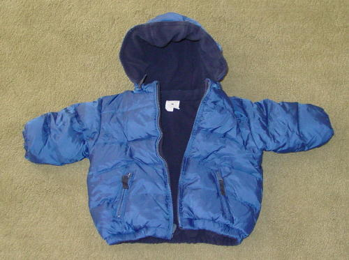
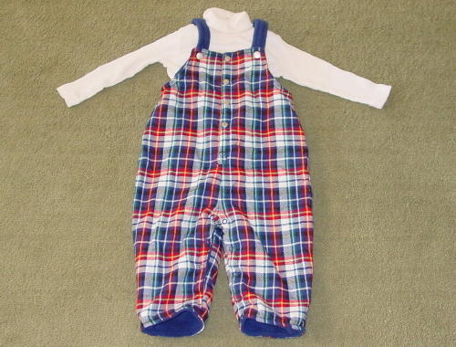
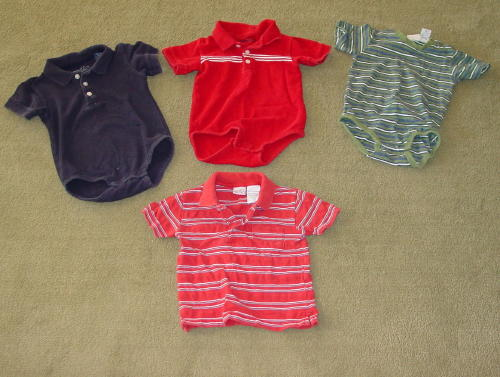
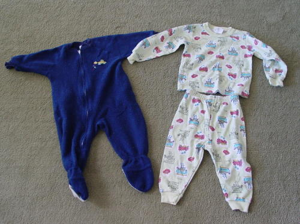
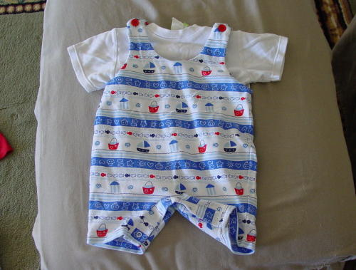
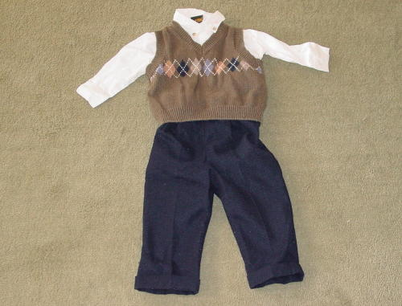
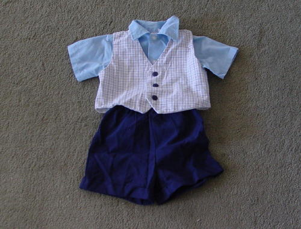
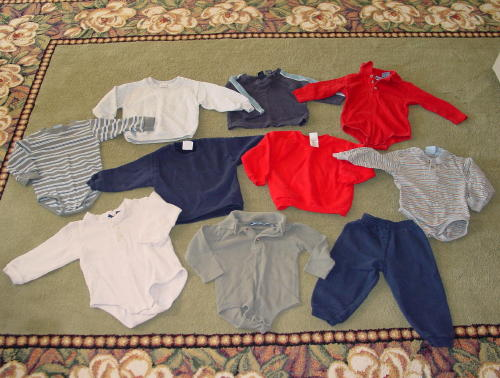

- 33- Baby Gap: $15-
size: 12-18 months NEVER USED fleece lined down reversible winter coat
w/
removeable hood. In excellent condition. I can't remember
if I bought this or if it was given to us as a gift (I think that's the
case), but it's never been cold enough here for it to be worn
here! I really wish it were because I love this coat!
|

- 34- Children's Place: $5
NEVER USED Flannel/ fleece lined overall w/ turtle neck-- this was a
gift and was never used as it's too warm here for it to be useful.
|

18 month shirts: $3
each/ $10 for all 4
All show a little wash wear but are in great condition
- 35- Cherokee, navy
blue polo onsie
- 36- Cherokee, red w/ white
stripes red polo onsie
- 37- Circo, green/
blue/ white striped onsie
- 38- Arizona Jean Co, red
w/ white/blue stripes
|

Carter's Pajamas: $3 each
or $5 for both
- 39- Fleece footed
sleeper, size 18 Months (Medium)- Shows wash wear/ some pilling, but in
good condition.
- 40- SOLD!
|

|

- 42- Oakie-Dokie:
$5- 18 months: 3 piece outfit. I personally don't care for the
pants much-- they seem scratchy to me & I opted to use different
ones when Andy wore it, but I think the shirt & sweater are cute!
|

- 43- Happy Fella: $5-
Size 18 months: 3 piece spring outfit- Andy wore this once for
Easter. I *think* it has a tie that goes w/ it, & if I find
it, I'll send it along, but it wasn't in the box when I found
this. And those are shorts, not pants if you can't tell...
|

18 month shirts/ pants: $5
each item or $20 for the entire lot. Show some wash wear
- 44- Koala Kids: Grey/
white/ blue striped onsie (left side of pic)
- 45- Arizona Jean Co: Light
greay sweatshirt (top right of #44 above)
- 46- Cherokee: Navy
blue shirt w/ light blue sripe down sleeves.
- 47- Koala Kids: Red
polo onsie
- 48- Hanes: Navy
blue sweatshirt (center of pic)
- 49- Arizona Jean Co: Red
sweatshirt (center of pic)
- 50- Koala Kids: Grey
multi-colored striped onsie (right of pic)
- 51- Cherokee: Beige/tan
onsie (bottom left of pic)
- 52- Koala Kids: Sage/greyish
polo onsie
- 53- Hanes: Navy
sweatpants
|